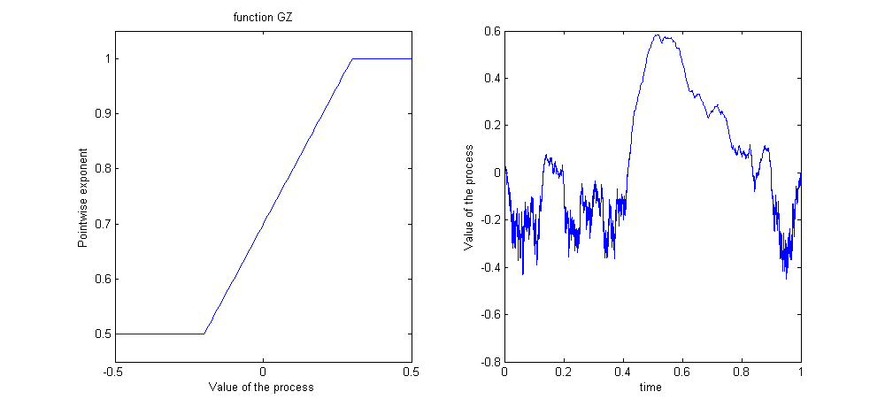
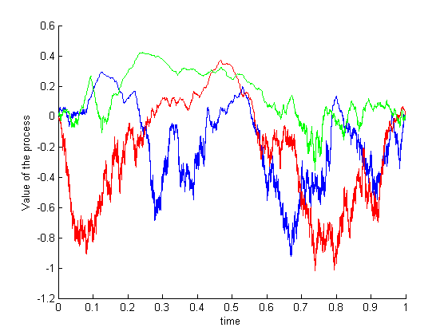
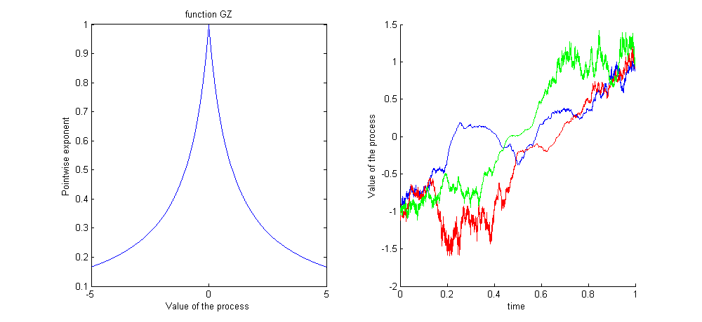
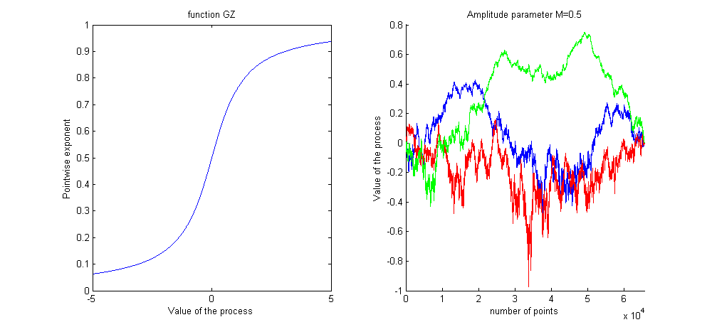
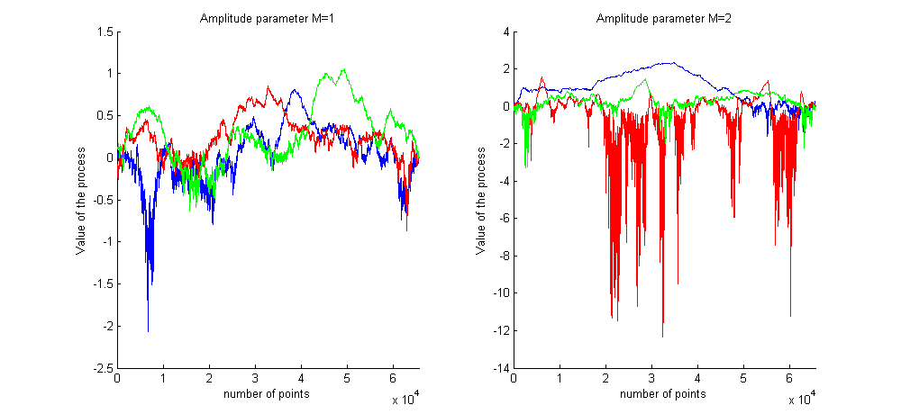

| FRACLAB Functions |
|
Generates a Self-Regulating Multifractional Process using an iterative midpoint displacement method
SRMP = srmpmidpoint(N,GZ)
SRMP = srmpmidpoint(N,GZ,'Propertyname',Propertyvalue)
SRMP = srmpmidpoint(N,GZ) Generates the self-regulating multifractional process, SRMP, using a sample size, N, and a function of z, GZ. The parameter N is a positive, power of 2, integer and the parameter GZ must be a function from R to (0,1), written in a symbolic way.
|
The function G(z) link the pointwise Holder exponent to the amplitude |
SRMP = srmpmidpoint(...,'Propertyname',Propertyvalue) Generates the self-regulating multifractional process, SRMP, applying the specified property settings. The Property setting can be choosen from the list below:
| Property | Purpose |
|---|---|
| 'limits' |
The SRMP is computed using specific initial and final values for the output SRMP. |
| 'ampli' |
The SRMP is computed using a specific multiplication factor of the regularity or texture amplitude, M.
This influences the amplitude of the variations of the output signal which will be multiplied by the texture amplitude M. |
| 'seed' |
The SRMP is computed with a specific random seed, SEED. This is useful to generate the same path several times or to compare the paths of different SRMPs. |
Note: It is interesting to run the code of these examples and zoom on the synthetized signals. This allows to observe their regularity very finely (much more precisely than shown by the drawings)
gz = 'max(0.5,min(z+0.7,1))'; N = 2^16;
srmp = srmpmidpoint(N,gz,'seed',100);
z = [-0.5:0.01:0.5]; t = [0:N-1]/N;
figure; subplot(1,2,1); plot(z,eval(gz)); ylim([0.45 1.05]); title('function GZ');
xlabel('Value of the process'); ylabel('Pointwise exponent');
subplot(1,2,2); plot(t,srmp); XLabel('time'); Ylabel('Value of the process');
% Remark: The process is smoother when its values are high

gz = 'max(0.5,min(z+0.7,1))'; N = 2^16; t = [0:N-1]/N;
srmp1 = srmpmidpoint(N,gz);
srmp2 = srmpmidpoint(N,gz);
srmp3 = srmpmidpoint(N,gz);
figure; hold on; plot(t,srmp1,'b'); plot(t,srmp2,'r'); plot(t,srmp3,'g');
xLabel('time'); ylabel('Value of the process');
% Remark: The regularity of the process depends only on its value

gz = '1./(1+abs(z))'; N = 2^16;
srmp1 = srmpmidpoint(N,gz,'limits',[-1,1]);
srmp2 = srmpmidpoint(N,gz,'limits',[-1,1]);
srmp3 = srmpmidpoint(N,gz,'limits',[-1,1]);
z = [-5:0.01:5]; t = [0:N-1]/N;
figure; subplot(1,2,1); plot(z,eval(gz)); title('function GZ');
xlabel('Value of the process'); ylabel('Pointwise exponent');
subplot(1,2,2); hold on; plot(t,srmp1,'b'); plot(t,srmp2,'r'); plot(t,srmp3,'g');
xLabel('time');ylabel('Value of the process');
% Remark: The process is smoother when its values are near of 0. The value of each realization is -1 at t = 0 and 1 at t = 1

gz = '1/pi*atan(z)+0.5'; N = 2^16; z = [-5:0.01:5]; M = 0.5;
figure; subplot(1,2,1); plot(z,eval(gz)); title('function GZ');
xlabel('Value of the process');ylabel('Pointwise exponent');
Z1 = srmpmidpoint(N,gz,'ampli',M);
Z2 = srmpmidpoint(N,gz,'ampli',M);
Z3 = srmpmidpoint(N,gz,'ampli',M);
subplot(1,2,2); hold on; plot(Z1,'b'); plot(Z2,'r'); plot(Z3,'g');
xLabel('number of points'); ylabel('Value of the process'); xlim([0 N]);
title(['Amplitude parameter M=',num2str(M)]);
figure;
for M = [1,2]
Z1 = srmpmidpoint(N,gz,'ampli',M);
Z2 = srmpmidpoint(N,gz,'ampli',M);
Z3 = srmpmidpoint(N,gz,'ampli',M);
subplot(1,2,M); hold on; plot(Z1,'b'); plot(Z2,'r'); plot(Z3,'g');
xLabel('number of points'); ylabel('Value of the process'); xlim([0 N]);
title(['Amplitude parameter M=',num2str(M)]);
end
% Remark: The higher is M, the more the process vary


| |
srmpfbm2d | synth2 | |